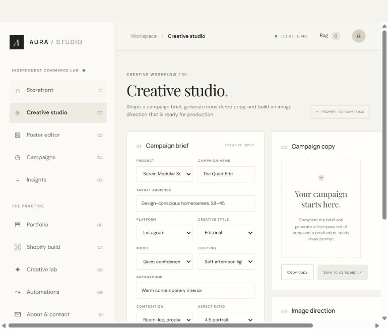

Introduce the Serein sofa through a room-led autumn story. Audience: design-conscious homeowners. Primary platform: Instagram; adapt for web and email.
A transparent workflow for moving from a product brief to structured campaign copy, image direction and adaptable layouts. The studio separates authored demo output from optional server-connected model output.
Independent Project · Demo Mode unless API is configured
Introduce the Serein sofa through a room-led autumn story. Audience: design-conscious homeowners. Primary platform: Instagram; adapt for web and email.
Warm contemporary interior, quiet afternoon light, tactile upholstery, generous breathing room, editorial type and a direct product CTA.
Editorial product photograph of a modular oatmeal linen sofa in a warm contemporary apartment, late-afternoon daylight grazing the fabric, tactile natural materials, lived-in but uncluttered styling, room-led wide composition, realistic commercial interior photography, soft neutral palette, ample quiet space for campaign typography, no text, no logos, no people.
Prompt example only. Demo mode does not create this image.A modular silhouette, softly textured upholstery and considered proportions make Serein an easy anchor for slower evenings and everyday gathering.
Room to settle in.
Soft texture, an easy silhouette, and space for the moments that make a room feel yours. Meet Serein, designed for living.
Explore the Serein collection
Discover the Serein modular sofa by AURA LIVING, with tactile upholstery and flexible proportions for a considered contemporary home.
Room to settle in. / Meet Serein, the modular sofa made for slow Sundays and full houses.
Softness you can build around. / Discover tactile upholstery and a silhouette that adapts with you.
Make space for Serein. / A modular sofa for the shape of everyday life.
Instagram 4:5 and 9:16, Facebook and display 1.91:1, website hero 16:9, and a 3:1 email banner.
Honest scope: Without server credentials, copy is authored deterministic demo text and is labeled Demo Mode. Optional provider calls only run when valid server-side configuration is present. The screenshot documents the local tool interface; these sample images are photo references, not generated output. Campaign performance is simulated and no lift or revenue is claimed.